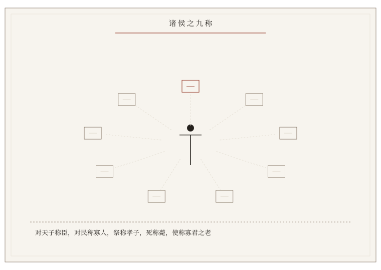

曲礼下 · 二·五十六 · 第 179 课
诸侯见天子称「臣某侯某」；与民言自称寡人；在凶服称適子孤；祭内事称孝子某侯某，外事称曾孙某侯某；死曰薨，复曰某甫复矣；既葬见天子曰类见；言谥曰类；使者自称寡君之老。
说什么事：一位诸侯在九种场合的九种自称。
落在哪一层：礼，兼及礼意。论自称之严。
为何编在此位：上节论相见之礼，此节论相见时如何说自己。
【经】諸侯見天子，曰「臣某侯某」。其與民言，自稱曰「寡人」。其在凶服，曰「適子孤」。臨祭祀，內事曰「孝子某侯某」，外事曰「曾孫某侯某」。死曰「薨」，復曰「某甫復矣」。既葬，見天子，曰「類見」。言謚曰「類」。諸侯使人使於諸侯，使者自稱曰「寡君之老」。
【注】謂嗇夫承命告天子辭也。其為州牧，則曰「天子之老臣某侯某奉珪請覲」。謙也，於臣亦然。凶服，亦謂未除喪。稱國者，遠辟天子。亦史書策辭。某甫，且字。代父受國。類猶象也，執皮帛，象諸侯之禮見也，其禮亡。使大夫行，象聘問之禮也，其禮亡。系於君以為尊也。此謂諸侯之卿上大夫。
【疏】「诸侯」谓五等诸侯见天子，而摈者将命之辞也，同得称臣，故曰臣也。「某侯某」者，若言齐侯、卫侯，下某是名；若伯子男则云曹伯、许男某也。「啬夫承命告天子辞也」，此注并《觐礼》之文，郑云啬夫盖司空属也，为末摈，承命于侯氏，末介传而上，上摈以告于天子也。「其为州牧，则曰天子之老臣某侯某奉珪请觐」，若为州牧既尊，若来见，故摈者加此四字也。「其与民言自称曰寡人」，寡人者，言己是寡德之人。「其在凶服曰適子孤」，谓摈者告宾之辞，称孤称名者皆谓父死未葬之前也。凡诸侯在丧之称，《公羊》未葬称子某，既葬称子，逾年称君；若其君自称犹曰子。「临祭祀，内事曰孝子某侯某，外事曰曾孙某侯某」，称国者，远辟天子。「死曰薨」，亦史书策辞。「复曰某甫复矣」，某甫且字。「既葬见天子曰类见」，代父受国，类犹象也，执皮帛象诸侯之礼见也。「言谥曰类」，将葬就君请谥，「凡谥既是表德，故由尊者所裁」。王肃云「请谥于天子，必以其实为谥，类于平生之行也」，何胤云「类其德而称之，如经天纬地曰文也」。「诸侯使人使于诸侯，使者自称曰寡君之老」，案《玉藻》云「上大夫曰下臣，摈者曰寡君之老，下大夫自名，摈者曰寡大夫」，此云自称曰寡君之老，则上大夫摈者传辞及自称于他国亦曰寡君之老。
臣某侯某 上某为国，下某为名。「曹伯、许男某」则爵称在前。
寡人 注「谦也」。疏「言己是寡德之人」。
適子孤 凶服，未除丧。注「未葬称子某」。
内事、外事 内事谓宗庙，外事谓郊社。故一称孝子，一称曾孙。
类见 注「类犹象也」，执皮帛如诸侯之礼见。
言谥曰类 注「使大夫行，象聘问之礼」。请谥于天子。
某甫 注「且字」。复时呼之。
诸侯见天子，自称「臣某侯某」。与国中人说话，自称「寡人」。在丧服中，称「適子孤」。祭宗庙称「孝子某侯某」，祭郊社称「曾孙某侯某」。死称「薨」，招魂时呼「某甫复矣」。葬后见天子称「类见」，请谥称「类」。派使者聘问诸侯，使者自称「寡君之老」。
此节九句，句句是自称。一个人怎么称呼自己，取决于他站在谁面前、做什么事、处在什么时节。礼在这里把「我」拆成了九个。
第一层 对天子称臣 疏「同得称臣」。诸侯在国是君，在天子是臣。一身两分，不以为矛盾。礼的多重身份，从不是分裂，是秩序。
第二层 寡人之谦 「寡德之人」。后世此称渐成威权之词，其初义却是自贬。读此节须记初义。
第三层 孝子与曾孙 祭宗庙自称孝子，祭郊社自称曾孙。所对之神不同，所叙之亲亦不同。称呼不是自称，是给人（或神）听的定位。
第四层 类见与类 两个「类」字，注皆训「象」：执皮帛如诸侯见天子之礼，遣大夫如聘问之礼。父死而未正君位，便以「象」的方式行礼。礼在过渡期里，用「像」代替「是」。
与今日何干 一个人在不同场合的自称，就是他的分寸感。称谓一乱，关系先乱。
| 左 | 右 |
|---|---|
| 见天子曰臣某侯某 | 上国名，下己名 |
| 与民言自称寡人 | 寡德之人，谦 |
| 在凶服曰適子孤 | 父死未葬之前 |
| 内事孝子，外事曾孙 | 宗庙与郊社之别 |
| 死曰薨，复曰某甫复矣 | 皆史书策辞 |
| 类见、言谥曰类 | 类者象也，其礼皆亡 |
画一人形居中，四周九枚小方牌环列，牌面皆空白、牌上各一道短横（示九种自称）；九牌与居中人形之间各引一道极短细线。九牌之中，正上方一枚略高、正下方一枚略低（示对天子与对民两端），其余七枚高度递变。不写文字。赭色只用在正上方那枚略高的牌。
